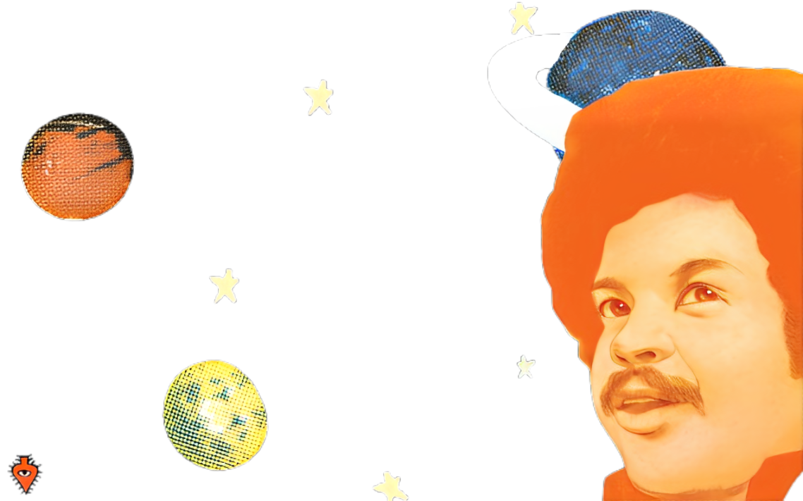
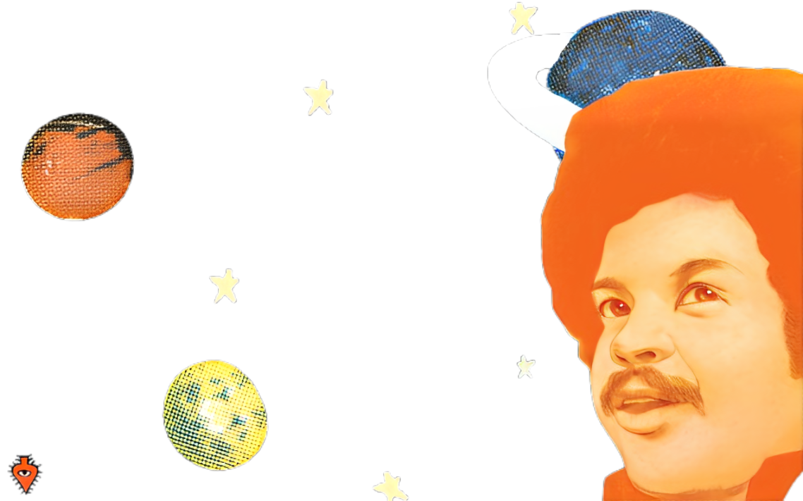
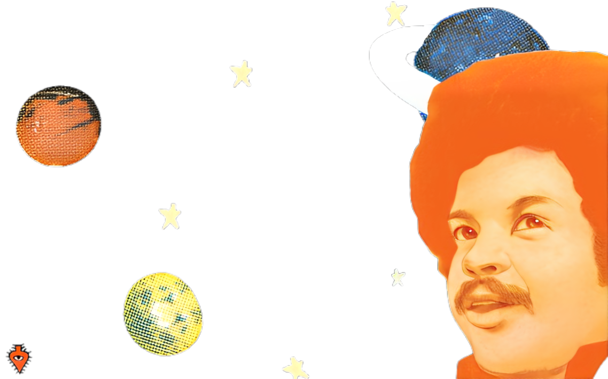
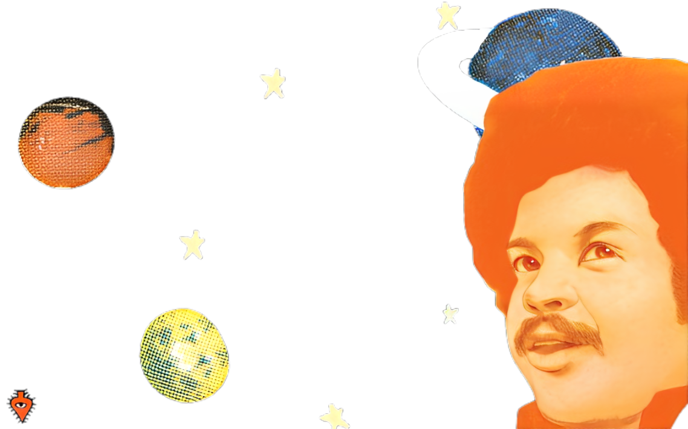

Tim Maia, nome artístico de Sebastião Rodrigues Maia, nasceu em 28 de setembro de 1942 no Rio de Janeiro, sendo o 18º filho em uma família de 19 irmãos. Cresceu na Tijuca, onde iniciou sua carreira artística ainda criança compondo suas primeiras canções. Ele é reconhecido por introduzir o estilo soul na Música Popular Brasileira (MPB) e por sua voz grave e intensa, que ajudaram a consolidar sua carreira nos anos 70 como um dos principais intérpretes e compositores do país.
Aos 14 anos, Tim Maia já tinha seu próprio grupo musical, Os Tijucanos do Ritmo. Em 1957, já tocando violão, deu aulas para Roberto e Erasmo Carlos e integrou a banda Os Sputniks com Roberto. Em 1959, após a morte de seu pai, Tim foi para os EUA estudar inglês e começou a cantar. Em 1963, foi preso por porte de maconha, passando seis meses na prisão e mais dois esperando ser deportado.
Seu primeiro compacto solo foi lançado em 1968 pela CBS, e em 1969, com These are the Songs e What You Want to Bet, sua carreira começou a decolar. Em 1970, lançou seu primeiro LP, Tim Maia, pela Polygram, indicado pelo grupo Os Mutantes, permanecendo no topo das paradas por 24 semanas no Rio de Janeiro. Nos anos seguintes, lançou Tim Maia volume II, III e IV, alcançando grande sucesso com suas melodias dançantes e vendas de discos.
Nos anos 70, Tim aderiu à Cultura Racional, lançando os álbuns Tim Maia Racional volumes 1 e 2 em 1975, pelo selo Seroma. Durante esse período, ele conseguiu se afastar dos vícios, o que melhorou seu desempenho vocal. No entanto, decepcionado com o líder da ideologia, ele se afastou e retirou os discos do mercado, tornando-os raridades.
Na década de 80, gravou álbuns significativos como O Descobridor dos Sete Mares (1983), Um Dia de Domingo (1985) e Tim Maia (1986). Em 1988, ganhou o Prêmio Sharp como Melhor Cantor. Nos anos 90, continuou ativo, lançando mais de um CD por ano e gravando sucessos como "Como uma onda" de Lulu Santos e Nelson Motta.
Nos anos 2000, diversos trabalhos de sua fase racional foram resgatados e disponibilizados na Internet, incluindo Escrituração Racional, Brasil Racional e Universo em Desencanto Disco.